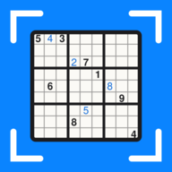
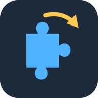
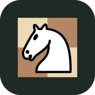
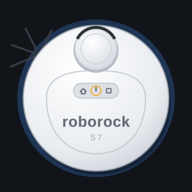
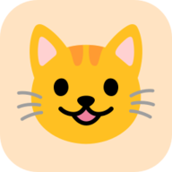

Foto & Kamera
Münzzähler
Euro-Münzen fotografieren, Anzahl und Gesamtwert ablesen.

Sudoku-Foto
Sudoku fotografieren und sofort die Lösung sehen.
Würfel-Löser
Zauberwürfel fotografieren und Schritt für Schritt lösen.

Puzzlehelfer
Puzzleteile fotografieren und erfahren, wo sie hingehören.

Schachfoto
Brett fotografieren, Stellung erkennen, die besten Züge sehen.
Alltag
Wetter
Minutengenau für die nächsten 90 Minuten, dann stündlich und für 7 Tage.
TV
Was jetzt und heute um 20:15 im Fernsehen läuft – auf einen Blick.
Schall
Schallpegel messen, Frequenzen analysieren, Aufnahmen machen.

Roscoe
Fernbedienung für Roborock-Saugroboter: Start, Pause, Karte.
Werkzeuge & Spiele
Mit Anmeldung
kassabuch
Gemeinsame Ausgaben abrechnen, mit möglichst wenigen Überweisungen.
pinnwand
Einkaufsliste und Haushaltsaufgaben für zwei.

MeineKatze
Tagebuch für Fressen, Gewicht und Tierarzt unserer Katzen.
Dokumentenablage
Dokumente scannen, lesen lassen, wiederfinden.
Keine App gefunden.